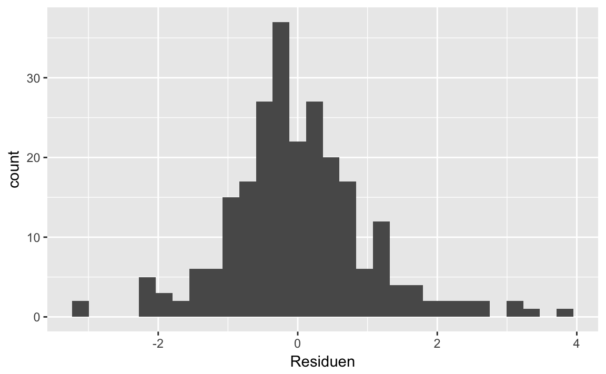
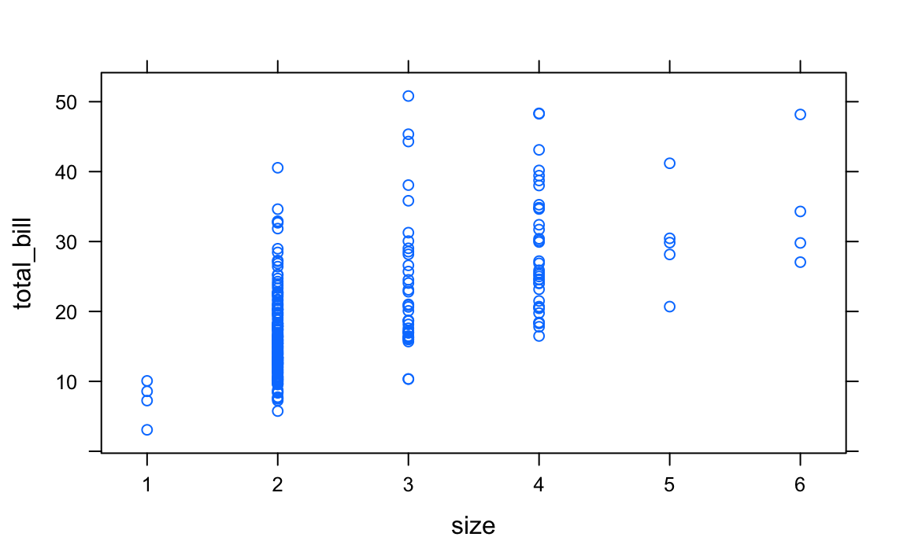
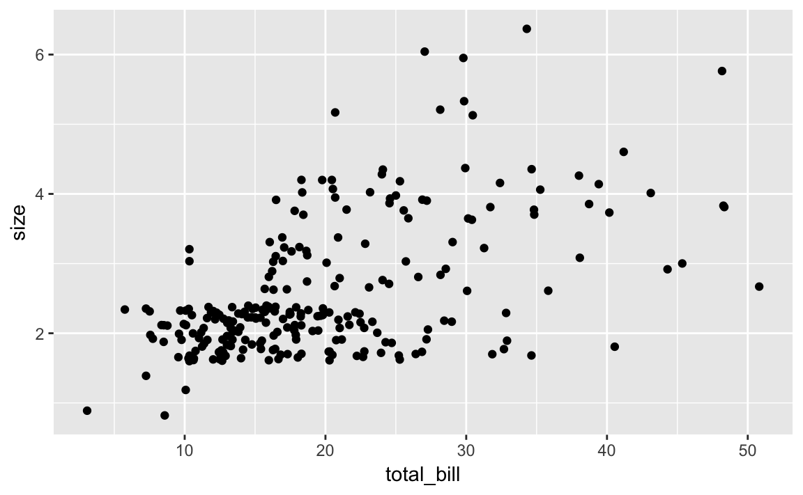

Kapitel 6 Geleitetes Modellieren
6.1 Lineare Regression
6.1.1 Eine kurze Geschichte der linearen Regression
6.1.2 Die lineare Regression als Schweizer Taschenmesser
6.1.3 Interaktion/ Moderation
6.2 Klassifizierende Regression
6.3 Penalisierende Regression
6.4 Baumbasierte Verfahre
6.5 Ausblick
6.6 Fallstudie: Überleben auf der Titanic
In dieser YACSDA (Yet-another-case-study-on-data-analysis) geht es um die beispielhafte Analyse nominaler Daten anhand des “klassischen” Falls zum Untergang der Titanic. Eine Frage, die sich hier aufdrängt, lautet: Kann (konnte) man sich vom Tod freikaufen, etwas polemisch formuliert. Oder neutraler: Hängt die Überlebensquote von der Klasse, in der derPassagiers reist, ab?
6.6.1 Daten und Pakete laden
# install.packages("titanic")
library("titanic")
data(titanic_train)Man beachte, dass ein Paket nur einmalig zu installieren ist (wie jede Software). Dann aber muss das Paket bei jedem Starten von R wieder von neuem gestartet werden. Außerdem ist es wichtig zu wissen, dass das Laden eines Pakets nicht automatisch die Datensätze aus dem Paket lädt. Man muss das oder die gewünschten Pakete selber (mit data(...)) laden. Und: Der Name eines Pakets (z.B. titanic) muss nicht identisch sein mit dem oder den Datensätzen des Pakets (z.B. titanic_train).
library(tidyverse)
FALSE Loading tidyverse: ggplot2
FALSE Loading tidyverse: tibble
FALSE Loading tidyverse: tidyr
FALSE Loading tidyverse: readr
FALSE Loading tidyverse: purrr
FALSE Loading tidyverse: dplyr
FALSE Conflicts with tidy packages ----------------------------------------------
FALSE filter(): dplyr, stats
FALSE lag(): dplyr, stats6.6.2 Erster Blick
Werfen wir einen ersten Blick in die Daten:
# install.packages("dplyr", dependencies = TRUE) # ggf. vorher installieren
glimpse(titanic_train)
FALSE Observations: 891
FALSE Variables: 12
FALSE $ PassengerId <int> 1, 2, 3, 4, 5, 6, 7, 8, 9, 10, 11, 12, 13, 14, 15,...
FALSE $ Survived <int> 0, 1, 1, 1, 0, 0, 0, 0, 1, 1, 1, 1, 0, 0, 0, 1, 0,...
FALSE $ Pclass <int> 3, 1, 3, 1, 3, 3, 1, 3, 3, 2, 3, 1, 3, 3, 3, 2, 3,...
FALSE $ Name <chr> "Braund, Mr. Owen Harris", "Cumings, Mrs. John Bra...
FALSE $ Sex <chr> "male", "female", "female", "female", "male", "mal...
FALSE $ Age <dbl> 22, 38, 26, 35, 35, NA, 54, 2, 27, 14, 4, 58, 20, ...
FALSE $ SibSp <int> 1, 1, 0, 1, 0, 0, 0, 3, 0, 1, 1, 0, 0, 1, 0, 0, 4,...
FALSE $ Parch <int> 0, 0, 0, 0, 0, 0, 0, 1, 2, 0, 1, 0, 0, 5, 0, 0, 1,...
FALSE $ Ticket <chr> "A/5 21171", "PC 17599", "STON/O2. 3101282", "1138...
FALSE $ Fare <dbl> 7.25, 71.28, 7.92, 53.10, 8.05, 8.46, 51.86, 21.07...
FALSE $ Cabin <chr> "", "C85", "", "C123", "", "", "E46", "", "", "", ...
FALSE $ Embarked <chr> "S", "C", "S", "S", "S", "Q", "S", "S", "S", "C", ...6.6.3 Welche Variablen sind interessant?
Von 12 Variablen des Datensatzes interessieren uns offenbar Pclass und Survived; Hilfe zum Datensatz kann man übrigens mit help(titanic_train) bekommen. Diese beiden Variablen sind kategorial (nicht-metrisch), wobei sie in der Tabelle mit Zahlen kodiert sind. Natürlich ändert die Art der Codierung (hier als Zahl) nichts am eigentlichen Skalenniveau. Genauso könnte man “Mann” mit 1 und “Frau” mit 2 kodieren; ein Mittelwert bliebe genauso (wenig) aussagekräftig. Zu beachten ist hier nur, dass sich manche R-Befehle verunsichern lassen, wenn nominale Variablen mit Zahlen kodiert sind. Daher ist es oft besser, nominale Variablen mit Text-Werten zu benennen (wie “survived” vs. “drowned” etc.). Wir kommen später auf diesen Punkt zurück.
6.6.4 Univariate Häufigkeiten
Bevor wir uns in kompliziertere Fragestellungen stürzen, halten wir fest: Wir untersuchen zwei nominale Variablen. Sprich: wir werden Häufigkeiten auszählen. Häufigkeiten (und relative Häufigkeiten, also Anteile oder Quoten) sind das, was uns hier beschäftigt.
Zählen wir zuerst die univariaten Häufigkeiten aus: Wie viele Passagiere gab es pro Klasse? Wie viele Passagiere gab es pro Wert von Survived (also die überlebten bzw. nicht überlebten)?
c1 <- count(titanic_train, Pclass)
c1
FALSE # A tibble: 3 × 2
FALSE Pclass n
FALSE <int> <int>
FALSE 1 1 216
FALSE 2 2 184
FALSE 3 3 491Aha. Zur besseren Anschaulichkeit können wir das auch plotten (ein Diagramm dazu malen).
# install.packages("ggplot2", dependencies = TRUE)
library(ggplot2)
qplot(x = Pclass, y = n, data = c1)
Der Befehl qplot zeichnet automatisch Punkte, wenn auf beiden Achsen “Zahlen-Variablen” stehen (also Variablen, die keinen “Text”, sondern nur Zahlen beinhalten. In R sind das Variablen vom Typ int (integer), also Ganze Zahlen oder vom Typ num (numeric), also reelle Zahlen).
c2 <- count(titanic_train, Survived)
c2
FALSE # A tibble: 2 × 2
FALSE Survived n
FALSE <int> <int>
FALSE 1 0 549
FALSE 2 1 342Man beachte, dass der Befehl count stehts eine Tabelle (data.frame bzw. tibble) verlangt und zurückliefert.
6.6.5 Bivariate Häufigkeiten
OK, gut. Jetzt wissen wir die Häufigkeiten pro Wert von Survived (dasselbe gilt für Pclass). Eigentlich interessiert uns aber die Frage, ob sich die relativen Häufigkeiten der Stufen von Pclass innerhalb der Stufen von Survived unterscheiden. Einfacher gesagt: Ist der Anteil der Überlebenden in der 1. Klasse größer als in der 3. Klasse?
Zählen wir zuerst die Häufigkeiten für alle Kombinationen von Survived und Pclass:
c3 <- count(titanic_train, Survived, Pclass)
c3
FALSE Source: local data frame [6 x 3]
FALSE Groups: Survived [?]
FALSE
FALSE Survived Pclass n
FALSE <int> <int> <int>
FALSE 1 0 1 80
FALSE 2 0 2 97
FALSE 3 0 3 372
FALSE 4 1 1 136
FALSE 5 1 2 87
FALSE 6 1 3 119Da Pclass 3 Stufen hat (1., 2. und 3. Klasse) und innerhalb jeder dieser 3 Klassen es die Gruppe der Überlebenden und der Nicht-Überlebenden gibt, haben wir insgesamt 3*2=6 Gruppen.
Es ist hilfreich, sich diese Häufigkeiten wiederum zu plotten; wir nehmen den gleichen Befehl wie oben.
qplot(x = Pclass, y = n, data = c3)
Hm, nicht so hilfreich. Schöner wäre, wenn wir (farblich) erkennen könnten, welcher Punkt für “Überlebt” und welcher Punkt für “Nicht-Überlebt” steht. Mit qplot geht das recht einfach: Wir sagen der Funktion qplot, dass die Farbe (color) der Punkte den Stufen von Survived zugeordnet werden sollen:
qplot(x = Pclass, y = n, color = Survived, data = c3)
Viel besser. Was noch stört, ist, dass Survived als metrische Variable verstanden wird. Das Farbschema lässt Nuancen, feine Farbschattierungen, zu. Für nominale Variablen macht das keinen Sinn; es gibt da keine Zwischentöne. Tot ist tot, lebendig ist lebendig. Wir sollten daher der Funktion sagen, dass es sich um nominale Variablen handelt:
qplot(x = factor(Pclass), y = n, color = factor(Survived), data = c3)
Viel besser. Jetzt noch ein bisschen Schnickschnack:
qplot(x = factor(Pclass), y = n, color = factor(Survived), data = c3) +
labs(x = "Klasse",
title = "Überleben auf der Titanic",
colour = "Überlebt?")
6.6.6 Signifikanztest
Manche Leute mögen Signifikanztests. Ich persönlich stehe ihnen kritisch gegenüber, da ein p-Wert eine Funktion der Stichprobengröße ist und außerdem zumeist missverstanden wird (er gibt nicht die Wahrscheinlichkeit der getesteten Hypothese an, was die Frage aufwirft, warum er mich dann interessieren sollte). Aber seisdrum, berechnen wir mal einen p-Wert. Es gibt mehrere statistische Tests, die sich hier potenziell anböten (was die Frage nach der Objektivität von statistischen Tests in ein ungünstiges Licht rückt). Nehmen wir den \(\chi^2\)-Test.
chisq.test(titanic_train$Survived, titanic_train$Pclass)
FALSE
FALSE Pearson's Chi-squared test
FALSE
FALSE data: titanic_train$Survived and titanic_train$Pclass
FALSE X-squared = 100, df = 2, p-value <2e-16Der p-Wert ist kleiner als 5%, daher entscheiden wir uns, entsprechend der üblichen Gepflogenheit, gegen die H0 und für die H1: “Es gibt einen Zusammenhang von Überlebensrate und Passagierklasse”.
6.6.7 Effektstärke
Abgesehen von der Signifikanz, und interessanter, ist die Frage, wie sehr die Variablen zusammenhängen. Für Häufigkeitsanalysen mit 2*2-Feldern bietet sich das “Odds Ratio” (OR), das Chancenverhältnis an. Das Chancen-Verhältnis beantwortet die Frage: “Um welchen Faktor ist die Überlebenschance in der einen Klasse größer als in der anderen Klasse?”. Eine interessante Frage, als schauen wir es uns an.
Das OR ist nur definiert für 2*2-Häufigkeitstabellen, daher müssen wir die Anzahl der Passagierklassen von 3 auf 2 verringern. Nehmen wir nur 1. und 3. Klasse, um den vermuteten Effekt deutlich herauszuschälen:
t2 <- filter(titanic_train, Pclass != 2) # "!=" heißt "nicht"Alternativ (synonym) könnten wir auch schreiben:
t2 <- filter(titanic_train, Pclass == 1 | Pclass == 3) # "|" heißt "oder"Und dann zählen wir wieder die Häufigkeiten aus pro Gruppe:
c4 <- count(t2, Pclass)
c4
FALSE # A tibble: 2 × 2
FALSE Pclass n
FALSE <int> <int>
FALSE 1 1 216
FALSE 2 3 491Schauen wir nochmal den p-Wert an, da wir jetzt ja mit einer veränderten Datentabelle operieren:
chisq.test(t2$Survived, t2$Pclass)
FALSE
FALSE Pearson's Chi-squared test with Yates' continuity correction
FALSE
FALSE data: t2$Survived and t2$Pclass
FALSE X-squared = 100, df = 1, p-value <2e-16Ein \(\chi^2\)-Wert von ~96 bei einem n von 707.
Dann berechnen wir die Effektstärke (OR) mit dem Paket compute.es (muss ebenfalls installiert sein).
library(compute.es)
chies(chi.sq = 96, n = 707)
FALSE Mean Differences ES:
FALSE
FALSE d [ 95 %CI] = 0.79 [ 0.63 , 0.95 ]
FALSE var(d) = 0.01
FALSE p-value(d) = 0
FALSE U3(d) = 78.6 %
FALSE CLES(d) = 71.2 %
FALSE Cliff's Delta = 0.42
FALSE
FALSE g [ 95 %CI] = 0.79 [ 0.63 , 0.95 ]
FALSE var(g) = 0.01
FALSE p-value(g) = 0
FALSE U3(g) = 78.6 %
FALSE CLES(g) = 71.2 %
FALSE
FALSE Correlation ES:
FALSE
FALSE r [ 95 %CI] = 0.37 [ 0.3 , 0.43 ]
FALSE var(r) = 0
FALSE p-value(r) = 0
FALSE
FALSE z [ 95 %CI] = 0.39 [ 0.31 , 0.46 ]
FALSE var(z) = 0
FALSE p-value(z) = 0
FALSE
FALSE Odds Ratio ES:
FALSE
FALSE OR [ 95 %CI] = 4.21 [ 3.15 , 5.61 ]
FALSE p-value(OR) = 0
FALSE
FALSE Log OR [ 95 %CI] = 1.44 [ 1.15 , 1.73 ]
FALSE var(lOR) = 0.02
FALSE p-value(Log OR) = 0
FALSE
FALSE Other:
FALSE
FALSE NNT = 3.57
FALSE Total N = 707Die Chance zu überleben ist also in der 1. Klasse mehr als 4 mal so hoch wie in der 3. Klasse. Es scheint: Money buys you live…
6.6.8 Logististische Regression
Berechnen wir noch das Odds Ratio mit Hilfe der logistischen Regression. Zum Einstieg: Ignorieren Sie die folgende Syntax und schauen Sie sich das Diagramm an. Hier sehen wir die (geschätzten) Überlebens-Wahrscheinlichkeiten für Passagiere der 1. Klasse vs. Passagiere der 3. Klasse.
titanic2 <- titanic_train %>%
filter(Pclass %in% c(1,3)) %>%
mutate(Pclass = factor(Pclass))
glm1 <- glm(data = titanic2,
formula = Survived ~ Pclass,
family = "binomial")
exp(coef(glm1))
FALSE (Intercept) Pclass3
FALSE 1.700 0.188
titanic2$pred_prob <- predict(glm1, type = "response")
Wir sehen, dass die Überlebens-Wahrscheinlichkeit in der 1. Klasse höher ist als in der 3. Klasse. Optisch grob geschätzt, ~60% in der 1. Klasse und ~25% in der 3. Klasse.
Schauen wir uns die logistische Regression an: Zuerst haben wir den Datensatz auf die Zeilen beschränkt, in denen Personen aus der 1. und 3. Klasse vermerkt sind (zwecks Vergleichbarkeit zu oben). Dann haben wir mit glm und family = "binomial" eine logistische Regression angefordert. Man beachte, dass der Befehl sehr ähnlich zur normalen Regression (lm(...)) ist.
Da die Koeffizienten in der Logit-Form zurückgegeben werden, haben wir sie mit der Exponential-Funktion in die “normale” Odds-Form gebracht (delogarithmiert, boa). Wir sehen, dass die Überlebens-Chance (Odds) 1.7 zu 1 betrug - bei der ersten Stufe von Pclass (1)27; von 27 Menschen überlebten in dieser Gruppe also 17 (17/27 = .63 Überlebens-Wahrscheinlichkeit); s. Intercept; der Achsenabschnitt gibt den Odds an, wenn die Prädiktor-Variable(n) den Wert “Null” hat/ haben, bzw. die erste Ausprägung, hier 1.
Im Vergleich dazu wird die Überlebens-Chance deutlich schlechter, wenn man die nächste Gruppe von Pclass (3) betrachtet. Die Odds verändern sich um den Faktor ~0.2. Da der Faktor kleiner als 1 ist, ist das kein gutes Zeichen. Die Überlebens-Chance sinkt; etwas genauer auf: 1.7 * 0.2 ≈ 0.34. Das heißt, die Überlebens-Chance ist in der 3. Klasse nur noch ca. 1 zu 3 (Überlebens-Wahrscheinlichkeit: ~25%).
Komfortabler können wir uns die Überlebens-Wahrscheinlichkeiten mit der Funktion predict ausgeben lassen.
predict(glm1, newdata = data.frame(Pclass = factor("1")), type = "response")
FALSE 1
FALSE 0.63
predict(glm1, newdata = data.frame(Pclass = factor("3")), type = "response")
FALSE 1
FALSE 0.242Alternativ kann man die Häufigkeiten auch noch “per Hand” bestimmen:
titanic_train %>%
filter(Pclass %in% c(1,3)) %>%
select(Survived, Pclass) %>%
group_by(Pclass, Survived) %>%
summarise(n = n() ) %>%
mutate(Anteil = n / sum(n))
FALSE Source: local data frame [4 x 4]
FALSE Groups: Pclass [2]
FALSE
FALSE Pclass Survived n Anteil
FALSE <int> <int> <int> <dbl>
FALSE 1 1 0 80 0.370
FALSE 2 1 1 136 0.630
FALSE 3 3 0 372 0.758
FALSE 4 3 1 119 0.2426.6.9 Effektstärken visualieren
Zum Abschluss schauen wir uns die Stärke des Zusammenhangs noch einmal graphisch an. Wir berechnen dafür die relativen Häufigkeiten pro Gruppe (im Datensatz ohne 2. Klasse, der Einfachheit halber).
c5 <- count(t2, Pclass, Survived)
c5$prop <- c5$n / 707
c5
FALSE Source: local data frame [4 x 4]
FALSE Groups: Pclass [?]
FALSE
FALSE Pclass Survived n prop
FALSE <int> <int> <int> <dbl>
FALSE 1 1 0 80 0.113
FALSE 2 1 1 136 0.192
FALSE 3 3 0 372 0.526
FALSE 4 3 1 119 0.168Genauer gesagt haben die Häufigkeiten pro Gruppe in Bezug auf die Gesamtzahl aller Passagiere berechnet; die vier Anteile addieren sich also zu 1 auf.
Das visualisieren wir wieder
qplot(x = factor(Pclass), y = prop, fill = factor(Survived), data = c5, geom = "col")
Das geom = "col" heißt, dass als “geometrisches Objekt” dieses Mal keine Punkte, sondern Säulen (columns) verwendet werden sollen.
qplot(x = factor(Pclass), y = prop, fill = factor(Survived), data = c5, geom = "col")
Ganz nett, aber die Häufigkeitsunterscheide von Survived zwischen den beiden Werten von Pclass stechen noch nicht so ins Auge. Wir sollten es anders darstellen.
Hier kommt der Punkt, wo wir von qplot auf seinen großen Bruder, ggplot wechseln sollten. qplot ist in Wirklichkeit nur eine vereinfachte Form von ggplot; die Einfachheit wird mit geringeren Möglichkeiten bezahlt. Satteln wir zum Schluss dieser Fallstudie also um:
ggplot(data = c5) +
aes(x = factor(Pclass), y = n, fill = factor(Survived)) +
geom_col(position = "fill") +
labs(x = "Passagierklasse", fill = "Überlebt?", caption = "Nur Passagiere, keine Besatzung")
Jeden sehen wir die Häufigkeiten des Überlebens bedingt auf die Passagierklasse besser. Wir sehen auf den ersten Blick, dass sich die Überlebensraten deutlich unterscheiden: Im linken Balken überleben die meisten; im rechten Balken ertrinken die meisten.
Diese letzte Analyse zeigt deutlich die Kraft von (Daten-)Visualisierungen auf. Der zu untersuchende Effekt tritt hier am stärken zu Tage; außerdem ist die Analyse relativ einfach.
Eine alternative Darstellung ist diese:
c5 %>%
ggplot +
aes(x = factor(Pclass), y = factor(Survived), fill = n) +
geom_tile()
Hier werden die vier “Fliesen” gleich groß dargestellt; die Fallzahl wird durch die Füllfarbe besorgt.
6.6.10 Fazit
In der Datenanalyse (mit R) kommt man mit wenigen Befehlen schon sehr weit; dplyr und ggplot2 zählen (zu Recht) zu den am häufigsten verwendeten Paketen. Beide sind flexibel, konsistent und spielen gerne miteinander. Die besten Einblicke haben wir aus deskriptiver bzw. explorativer Analyse (Diagramme) gewonnen. Signifikanztests oder komplizierte Modelle waren nicht zentral. In vielen Studien/Projekten der Datenanalyse gilt ähnliches: Daten umformen und verstehen bzw. “veranschaulichen” sind zentrale Punkte, die häufig viel Zeit und Wissen fordern. Bei der Analyse von nominalskalierten sind Häufigkeitsauswertungen ideal.